Influence operationalizations
Last compiled on september, 2022
We will show how the influence statistics in RSiena behave. We assume that ego is connected to all alters.
Functions
First, we define some functions:
Centering behavior variables
fcentering <- function(actors) {
centered <- actors - mean(actors)
return(centered)
}Calculating similarity scores
\[ sim^z_{ij} = 1 - \frac{|z_i - z_j|}{r_V} \]
fsimij <- function(actors, min, max) {
# rv <- max(actors) - min(actors)
rv <- max - min
mat1 <- matrix(actors, nrow = length(actors), ncol = length(actors), byrow = TRUE)
mat2 <- t(mat1)
simij <- 1 - (abs(mat1 - mat2)/rv)
return(simij)
}linear shape
flinear <- function(ego, alters, ...) {
actors <- c(ego, alters) #define the network
beh_centered <- fcentring(actors) #center behavior scores
statistic <- beh_centered[1] #the actual statistic
return(statistic)
}quadratic shape
fquad <- function(ego, alters, ...) {
actors <- c(ego, alters) #define the network
beh_centered <- fcentring(actors) #center behavior scores
statistic <- (beh_centered[1])^2 #the actual statistic
return(statistic)
}The average similarity effect (avSim)
\[ s^{beh}_{i5}(x,z) = x^{-1}_{i+}\sum_j x_{ij}(sim^z_{ij} - \widehat{sim^z}) \]
favSim <- function(ego, alters, min, max) {
actors <- c(ego, alters) #define the network
beh_centered <- fcentering(actors) #center behavior scores
simij <- fsimij(beh_centered, min, max) #calculate the similarity scores
diag(simij) <- NA
msimij <- mean(simij, na.rm = TRUE) #calculate the mean similarity score. only calculate mean on non-diagonal cells??!!
simij_c <- simij - msimij #center the similarity scores
statistic <- sum(simij_c[1, ], na.rm = TRUE)/length(alters) #the actual statistic
return(statistic)
}favSim2 <- function(ego, alters, min, max) {
actors <- c(ego, alters) #define the network
beh_centered <- fcentring(actors) #center behavior scores
simij <- fsimij(beh_centered, min, max) #calculate the similarity scores
diag(simij) <- NA
# msimij <- mean(simij, na.rm=TRUE) #calculate the mean similarity score. only calculate mean
# on non-diagonal cells??!!
simij_c <- simij # - msimij #center the similarity scores
statistic <- sum(simij_c[1, ], na.rm = TRUE)/length(alters) #the actual statistic
return(statistic)
}The average attraction towards higher effect (avAttHigher)
\[ s^{beh}_{i23}(x,z) = x^{-1}_{i+}\sum_j x_{ij} (\, I \{ (z_j)>z_i \} sim^z_{ij} + I \{ (z_j ) \le z_i \} )\,\]
favAttHigher <- function(ego, alters, min, max) {
actors <- c(ego, alters)
beh_centered <- fcentering(actors)
simij <- fsimij(beh_centered, min, max)
diag(simij) <- NA
simijH <- simij[1, ]
simijH[beh_centered <= beh_centered[1]] <- 1
simijH[1] <- NA
statistic <- sum(simijH, na.rm = TRUE)/length(alters)
return(statistic)
}The average attraction towards higher alters effect (avAttLower)
\[ s^{beh}_{i24}(x,z) = x^{-1}_{i+}\sum_j x_{ij} (\, I \{ (z_j)<z_i \} sim^z_{ij} + I \{ (z_j ) \ge z_i \} )\,\]
favAttLower <- function(ego, alters, min, max) {
actors <- c(ego, alters)
beh_centered <- fcentering(actors)
simij <- fsimij(beh_centered, min, max)
diag(simij) <- NA
simijL <- simij[1, ]
simijL[beh_centered >= beh_centered[1]] <- 1
simijL[1] <- NA
statistic <- sum(simijL, na.rm = TRUE)/length(alters)
return(statistic)
}Average alter effect (avAlt)
\[ s^{beh}_{i27}(x,z) = z_i(\textstyle \sum_jx_{ij}z_j)/(\textstyle \sum_jx_{ij}) \]
favAlt <- function(ego, alters, ...) {
actors <- c(ego, alters)
beh_centered <- fcentering(actors)
statistic <- beh_centered[1] * (sum(beh_centered[-1], na.rm = TRUE)/length(alters))
return(statistic)
}Average attraction mean (AttMean)
We are attracted to the mean of our alters!
(behaves approximately similar to avAlt, different shape.)
\[ s^{beh}_{i}(x,z) = 1 - \frac{\lvert(z_i - x^{-1}_{i+}\sum_j x_{ij}z_j)\rvert}{r_Z} \]
fAttMean <- function(ego, alters, min, max, ...) {
rv <- max - min
actors <- c(ego, alters)
beh_centered <- fcentring(actors)
statistic <- 1 - abs(beh_centered[1] - (sum(beh_centered[-1], na.rm = TRUE)/length(alters)))/rv #thus we strive for a highest local similarity score!
return(statistic)
}Make plot of statistic values
finluenceplot <- function(alters, min, max, fun, params, results = TRUE, plot = TRUE) {
# check correct number of parameters are given
if (length(fun) != length(params))
stop("Please provide one (and only one) parameter for each of the behavioral effects!")
# calculuate value of evaluation function
s <- NA
for (i in min:max) {
s[i] <- 0
for (j in 1:length(fun)) {
s[i] <- s[i] + params[j] * fun[[j]](i, alters, min, max)
}
}
# calculate the probabilities
p <- NA
for (i in min:max) {
p[i] <- exp(s[i])/sum(exp(s))
}
# calculate the probabilities of choice set
p2 <- NA
for (i in min:max) {
if (i == min) {
p2[i] <- exp(s[i])/sum(exp(s[i]) + exp(s[i + 1]))
} else if (i == max) {
p2[i] <- exp(s[i])/sum(exp(s[i]) + exp(s[i - 1]))
} else {
p2[i] <- exp(s[i])/sum(exp(s[i]) + exp(s[i - 1]) + exp(s[i + 1]))
}
}
# calculate the probability ratio
r <- NA
for (i in min:max) {
r[i] <- p[i]/p[1]
}
# some simple plots
if (plot) {
name <- deparse(substitute(fun))
name <- stringr::str_sub(as.character(name), 6, -2)
par(mfrow = c(2, 2))
plot(y = s, x = min:max, xlab = "ego behavioral score", ylab = name, type = "b")
mtext("EVALUATION", line = 1)
mtext(paste("alters:", paste0(alters, collapse = ",")))
plot(y = p, x = min:max, xlab = "ego behavioral score", ylab = name, ylim = c(0, 1), type = "b")
mtext("PROBABILITIES", line = 1)
mtext(paste("alters:", paste0(alters, collapse = ",")))
plot(y = p2, x = min:max, xlab = "ego behavioral score", ylab = name, ylim = c(0, 1), type = "b")
mtext("PROBABILITIES_choice_set", line = 1)
mtext(paste("alters:", paste0(alters, collapse = ",")))
plot(y = r, x = min:max, xlab = "ego behavioral score", ylab = name, type = "b")
mtext("RATIOS", line = 1)
mtext(paste("alters:", paste0(alters, collapse = ",")))
}
# return results for more fancy plotting
if (results) {
x <- min:max
df <- data.frame(x, s, p, p2, r)
return(df)
}
}Examples
alters1 <- rep(c(3, 3, 3, 3, 3, 3), 1)
finluenceplot(alters = alters1, min = 1, max = 6, list(flinear, fquad), params = c(0.1, -1))
finluenceplot(alters = alters1, min = 1, max = 6, list(favSim), params = c(1))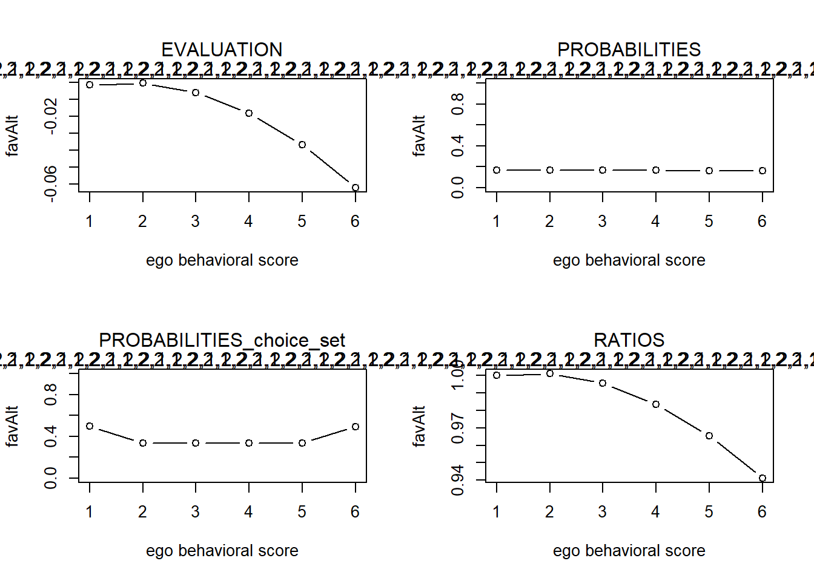
finluenceplot(alters = alters1, min = 1, max = 6, list(favAlt), params = c(1))
finluenceplot(alters = alters1, min = 1, max = 6, list(fAttMean), params = c(1))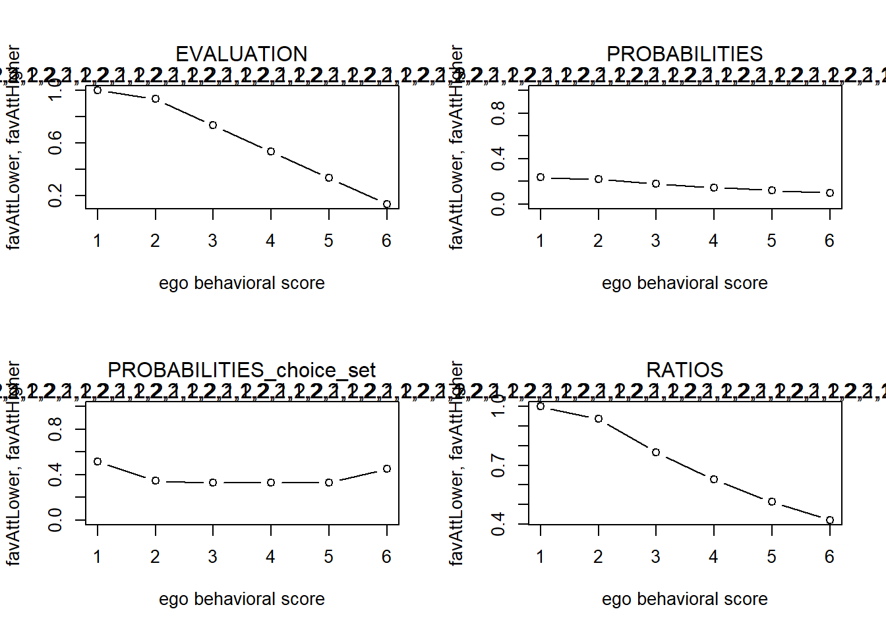
finluenceplot(alters = alters1, min = 1, max = 6, list(favAttHigher), params = c(1))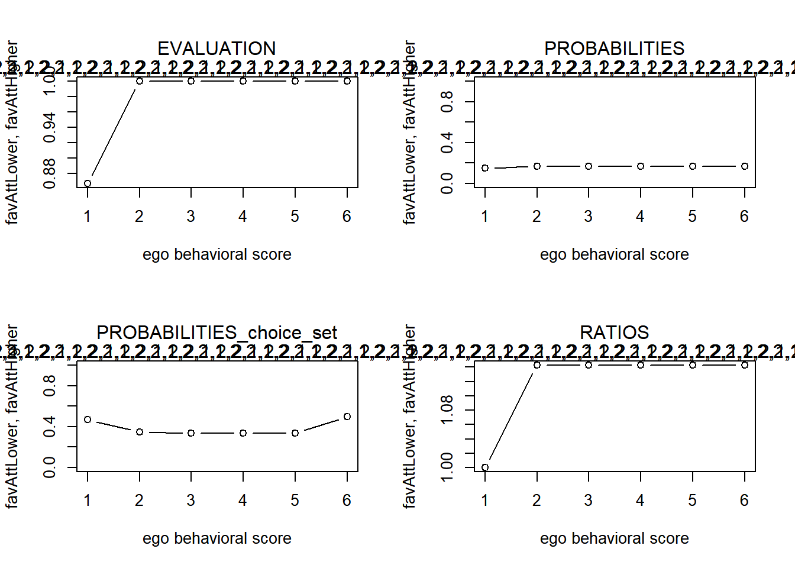
finluenceplot(alters = alters1, min = 1, max = 6, list(favAttLower), params = c(1))
finluenceplot(alters = alters1, min = 1, max = 6, fun = list(favAttLower, favAttHigher), params = c(1,
1))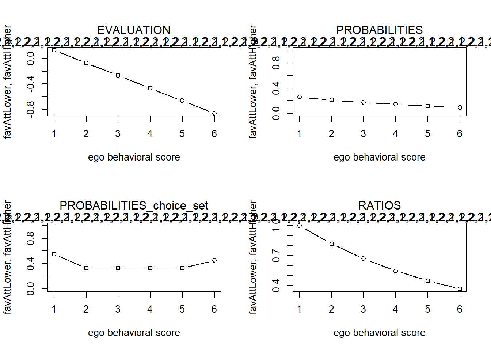
finluenceplot(alters = alters1, min = 1, max = 6, list(fAttMean, favAttHigher), params = c(1, 1))
#> x s p p2 r
#> 1 1 -3.1102041 0.021521281 0.09197159 1.00000000
#> 2 2 -0.8204082 0.212477940 0.29649713 9.87292259
#> 3 3 0.0000000 0.482628079 0.50946830 22.42562059
#> 4 4 -0.6489796 0.252211177 0.32961799 11.71915274
#> 5 5 -2.7673469 0.030322785 0.10700672 1.40896747
#> 6 6 -6.3551020 0.000838739 0.02691585 0.03897254
#> x s p p2 r
#> 1 1 -0.2857143 0.1537345 0.4643463 1.0000000
#> 2 2 -0.1428571 0.1773428 0.3310773 1.1535650
#> 3 3 0.0000000 0.2045764 0.3657971 1.3307122
#> 4 4 -0.1428571 0.1773428 0.3310773 1.1535650
#> 5 5 -0.2857143 0.1537345 0.3310773 1.0000000
#> 6 6 -0.4285714 0.1332691 0.4643463 0.8668779
#> x s p p2 r
#> 1 1 -0.4897959 0.1416047 0.4091822 1.0000000
#> 2 2 -0.1224490 0.2044628 0.3542543 1.4438988
#> 3 3 0.0000000 0.2310965 0.3610757 1.6319831
#> 4 4 -0.1224490 0.2044628 0.3542543 1.4438988
#> 5 5 -0.4897959 0.1416047 0.3348927 1.0000000
#> 6 6 -1.1020408 0.0767685 0.3515473 0.5421325
#> x s p p2 r
#> 1 1 0.6 0.1480744 0.4501660 1.0000000
#> 2 2 0.8 0.1808585 0.3289329 1.2214028
#> 3 3 1.0 0.2209011 0.3791525 1.4918247
#> 4 4 0.8 0.1808585 0.3289329 1.2214028
#> 5 5 0.6 0.1480744 0.3289329 1.0000000
#> 6 6 0.4 0.1212331 0.4501660 0.8187308
#> x s p p2 r
#> 1 1 0.6 0.1221195 0.4501660 1.000000
#> 2 2 0.8 0.1491571 0.3289329 1.221403
#> 3 3 1.0 0.1821809 0.3547696 1.491825
#> 4 4 1.0 0.1821809 0.3333333 1.491825
#> 5 5 1.0 0.1821809 0.3333333 1.491825
#> 6 6 1.0 0.1821809 0.5000000 1.491825
#> x s p p2 r
#> 1 1 1.0 0.1984969 0.5000000 1.0000000
#> 2 2 1.0 0.1984969 0.3333333 1.0000000
#> 3 3 1.0 0.1984969 0.3547696 1.0000000
#> 4 4 0.8 0.1625155 0.3289329 0.8187308
#> 5 5 0.6 0.1330564 0.3289329 0.6703200
#> 6 6 0.4 0.1089374 0.4501660 0.5488116
#> x s p p2 r
#> 1 1 1.6 0.1480744 0.4501660 1.0000000
#> 2 2 1.8 0.1808585 0.3289329 1.2214028
#> 3 3 2.0 0.2209011 0.3791525 1.4918247
#> 4 4 1.8 0.1808585 0.3289329 1.2214028
#> 5 5 1.6 0.1480744 0.3289329 1.0000000
#> 6 6 1.4 0.1212331 0.4501660 0.8187308
#> x s p p2 r
#> 1 1 1.2 0.1080764 0.4013123 1.000000
#> 2 2 1.6 0.1612311 0.3162411 1.491825
#> 3 3 2.0 0.2405285 0.4017596 2.225541
#> 4 4 1.8 0.1969281 0.3289329 1.822119
#> 5 5 1.6 0.1612311 0.3289329 1.491825
#> 6 6 1.4 0.1320048 0.4501660 1.221403alters1 <- rep(c(1, 1, 1, 5, 5, 5), 1)
finluenceplot(alters = alters1, min = 1, max = 6, list(favSim), params = c(1))
finluenceplot(alters = alters1, min = 1, max = 6, list(favAlt), params = c(1))
finluenceplot(alters = alters1, min = 1, max = 6, list(fAttMean), params = c(1))
finluenceplot(alters = alters1, min = 1, max = 6, fun = list(favAttLower, favAttHigher), params = c(1,
0))
finluenceplot(alters = alters1, min = 1, max = 6, fun = list(favAttLower, favAttHigher), params = c(0,
1))
finluenceplot(alters = alters1, min = 1, max = 6, fun = list(favAttLower, favAttHigher), params = c(1,
3))
finluenceplot(alters = alters1, min = 1, max = 6, fun = list(favAttLower, favAttHigher), params = c(1,
-1))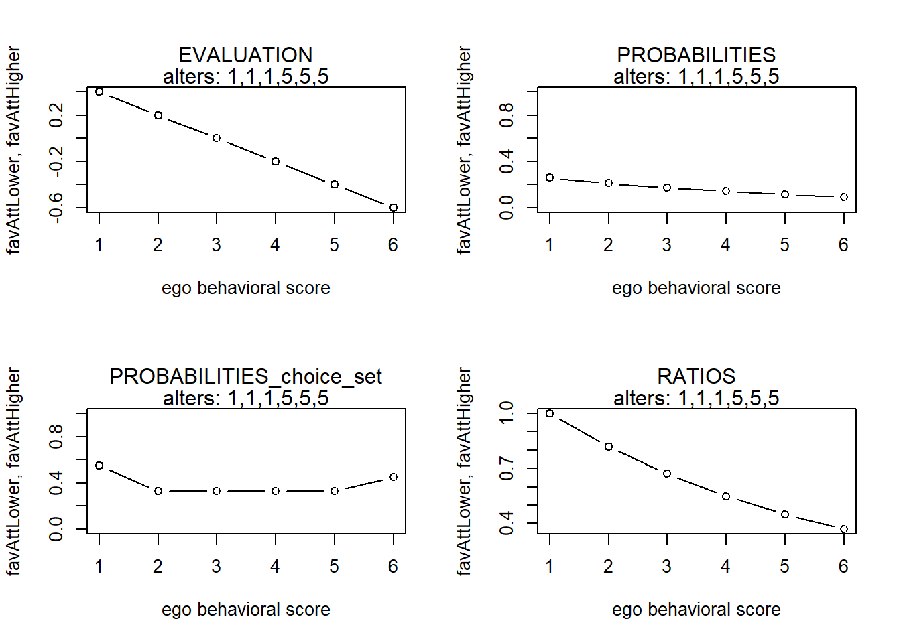
finluenceplot(alters = alters1, min = 1, max = 6, fun = list(favAttLower, favAttHigher), params = c(-1,
1))
finluenceplot(alters = alters1, min = 1, max = 6, fun = list(flinear, favAttLower, favAttHigher), params = c(1,
-1, 1))
finluenceplot(alters = alters1, min = 1, max = 6, fun = list(flinear, favAttLower, favAttHigher), params = c(1,
-1, 1))
finluenceplot(alters = alters1, min = 1, max = 6, fun = list(flinear), params = c(1))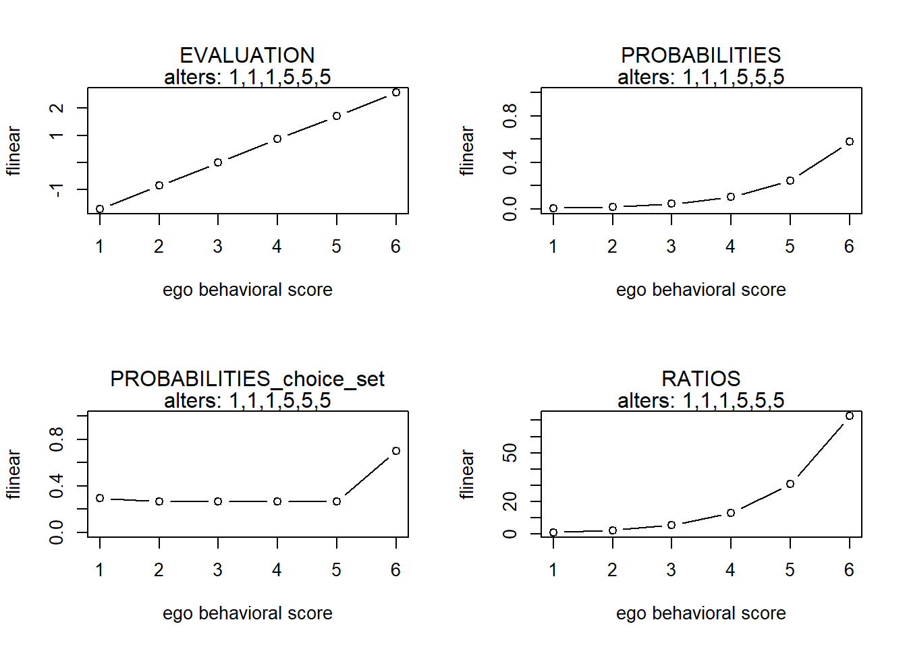
#> x s p p2 r
#> 1 1 0.05714286 0.1704484 0.5000000 1.0000000
#> 2 2 0.05714286 0.1704484 0.3333333 1.0000000
#> 3 3 0.05714286 0.1704484 0.3333333 1.0000000
#> 4 4 0.05714286 0.1704484 0.3333333 1.0000000
#> 5 5 0.05714286 0.1704484 0.3488115 1.0000000
#> 6 6 -0.08571429 0.1477580 0.4643463 0.8668779
#> x s p p2 r
#> 1 1 -0.4897959 0.1416047 0.4091822 1.0000000
#> 2 2 -0.1224490 0.2044628 0.3542543 1.4438988
#> 3 3 0.0000000 0.2310965 0.3610757 1.6319831
#> 4 4 -0.1224490 0.2044628 0.3542543 1.4438988
#> 5 5 -0.4897959 0.1416047 0.3348927 1.0000000
#> 6 6 -1.1020408 0.0767685 0.3515473 0.5421325
#> x s p p2 r
#> 1 1 0.6 0.1480744 0.4501660 1.0000000
#> 2 2 0.8 0.1808585 0.3289329 1.2214028
#> 3 3 1.0 0.2209011 0.3791525 1.4918247
#> 4 4 0.8 0.1808585 0.3289329 1.2214028
#> 5 5 0.6 0.1480744 0.3289329 1.0000000
#> 6 6 0.4 0.1212331 0.4501660 0.8187308
#> x s p p2 r
#> 1 1 1.0 0.2135147 0.5249792 1.0000000
#> 2 2 0.9 0.1931961 0.3322250 0.9048374
#> 3 3 0.8 0.1748111 0.3322250 0.8187308
#> 4 4 0.7 0.1581756 0.3322250 0.7408182
#> 5 5 0.6 0.1431232 0.3420088 0.6703200
#> 6 6 0.4 0.1171794 0.4501660 0.5488116
#> x s p p2 r
#> 1 1 0.6 0.1305469 0.4750208 1.000000
#> 2 2 0.7 0.1442766 0.3322250 1.105171
#> 3 3 0.8 0.1594504 0.3322250 1.221403
#> 4 4 0.9 0.1762199 0.3322250 1.349859
#> 5 5 1.0 0.1947531 0.3442533 1.491825
#> 6 6 1.0 0.1947531 0.5000000 1.491825
#> x s p p2 r
#> 1 1 2.8 0.1043514 0.4501660 1.000000
#> 2 2 3.0 0.1274551 0.3289329 1.221403
#> 3 3 3.2 0.1556740 0.3289329 1.491825
#> 4 4 3.4 0.1901406 0.3289329 1.822119
#> 5 5 3.6 0.2322383 0.3791525 2.225541
#> 6 6 3.4 0.1901406 0.4501660 1.822119
#> x s p p2 r
#> 1 1 0.4 0.25939861 0.5498340 1.0000000
#> 2 2 0.2 0.21237762 0.3289329 0.8187308
#> 3 3 0.0 0.17388009 0.3289329 0.6703200
#> 4 4 -0.2 0.14236097 0.3289329 0.5488116
#> 5 5 -0.4 0.11655531 0.3289329 0.4493290
#> 6 6 -0.6 0.09542741 0.4501660 0.3678794
#> x s p p2 r
#> 1 1 -0.4 0.09542741 0.4501660 1.000000
#> 2 2 -0.2 0.11655531 0.3289329 1.221403
#> 3 3 0.0 0.14236097 0.3289329 1.491825
#> 4 4 0.2 0.17388009 0.3289329 1.822119
#> 5 5 0.4 0.21237762 0.3289329 2.225541
#> 6 6 0.6 0.25939861 0.5498340 2.718282
#> x s p p2 r
#> 1 1 -2.114286 0.003309969 0.2578558 1.000000
#> 2 2 -1.057143 0.009526540 0.2366537 2.878136
#> 3 3 0.000000 0.027418678 0.2366537 8.283667
#> 4 4 1.057143 0.078914683 0.2366537 23.841519
#> 5 5 2.114286 0.227127190 0.2366537 68.619135
#> 6 6 3.171429 0.653702940 0.7421442 197.495201
#> x s p p2 r
#> 1 1 -2.114286 0.003309969 0.2578558 1.000000
#> 2 2 -1.057143 0.009526540 0.2366537 2.878136
#> 3 3 0.000000 0.027418678 0.2366537 8.283667
#> 4 4 1.057143 0.078914683 0.2366537 23.841519
#> 5 5 2.114286 0.227127190 0.2366537 68.619135
#> 6 6 3.171429 0.653702940 0.7421442 197.495201
#> x s p p2 r
#> 1 1 -1.7142857 0.007969358 0.2979366 1.000000
#> 2 2 -0.8571429 0.018779143 0.2644949 2.356418
#> 3 3 0.0000000 0.044251518 0.2644949 5.552708
#> 4 4 0.8571429 0.104275094 0.2644949 13.084503
#> 5 5 1.7142857 0.245715754 0.2644949 30.832565
#> 6 6 2.5714286 0.579009134 0.7020634 72.654424alters1 <- rep(c(1, 2, 2), 100)
finluenceplot(alters = alters1, min = 1, max = 6, list(favSim), params = c(1))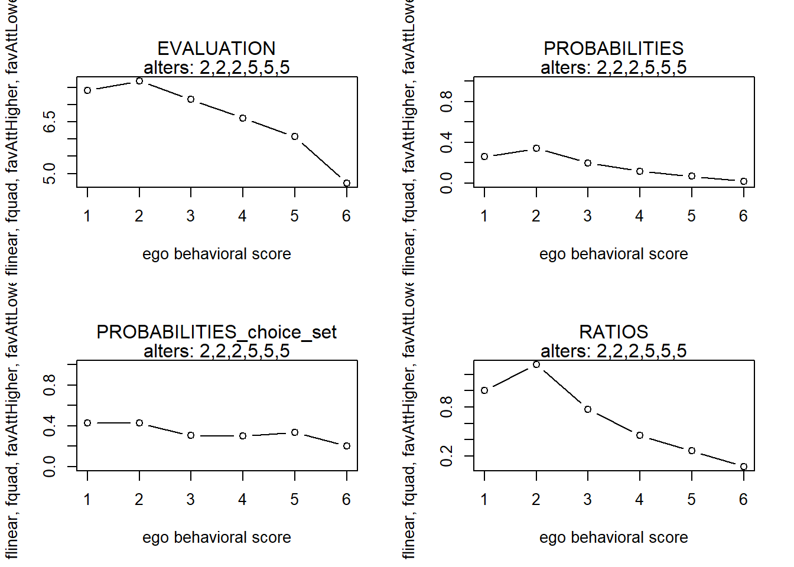
finluenceplot(alters = alters1, min = 1, max = 6, list(favAlt), params = c(1))
finluenceplot(alters = alters1, min = 1, max = 6, list(fAttMean), params = c(1))
finluenceplot(alters = alters1, min = 1, max = 6, fun = list(favAttLower, favAttHigher), params = c(1,
0))
finluenceplot(alters = alters1, min = 1, max = 6, fun = list(favAttLower, favAttHigher), params = c(0,
1))
finluenceplot(alters = alters1, min = 1, max = 6, fun = list(favAttLower, favAttHigher), params = c(1,
1))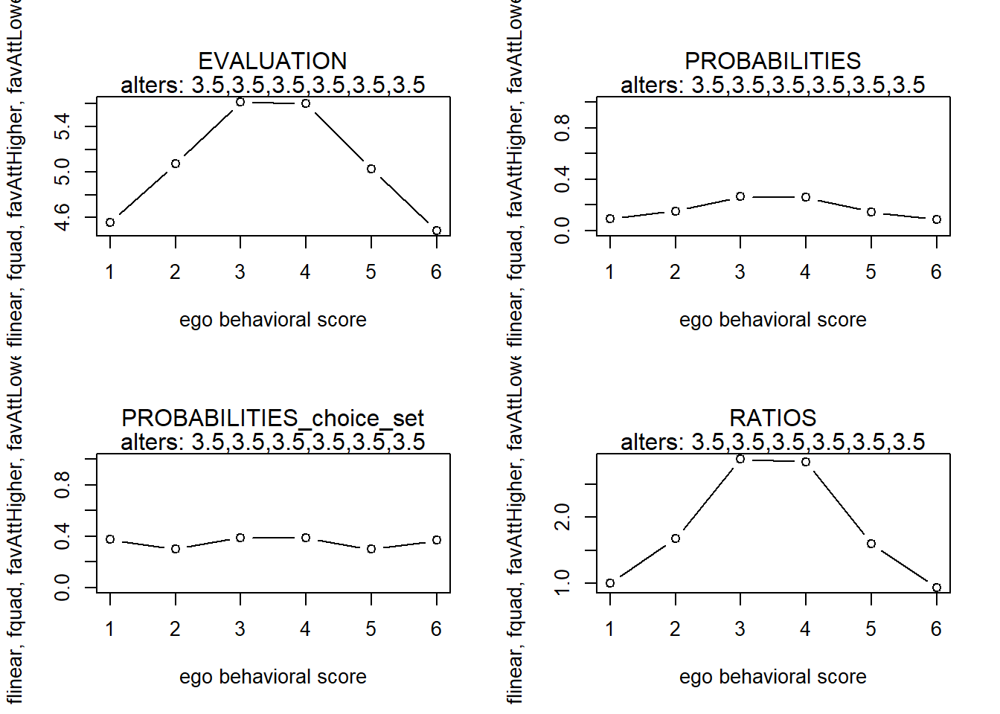
finluenceplot(alters = alters1, min = 1, max = 6, fun = list(favAttLower, favAttHigher), params = c(1,
-1))
finluenceplot(alters = alters1, min = 1, max = 6, fun = list(favAttLower, favAttHigher), params = c(-1,
1))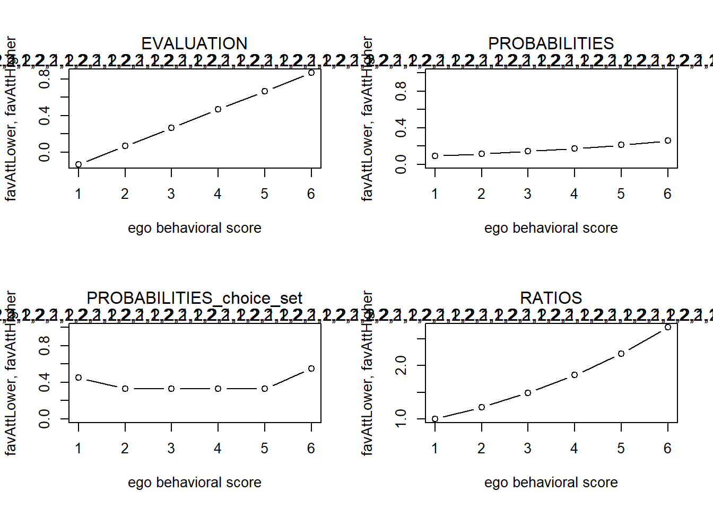
#> x s p p2 r
#> 1 1 -0.04385382 0.2112416 0.4834501 1.0000000
#> 2 2 0.02236988 0.2257045 0.3628788 1.0684657
#> 3 3 -0.17630122 0.1850369 0.3289906 0.8759490
#> 4 4 -0.37497231 0.1516969 0.3289906 0.7181201
#> 5 5 -0.57364341 0.1243640 0.3289906 0.5887288
#> 6 6 -0.77231451 0.1019561 0.4504950 0.4826514
#> x s p p2 r
#> 1 1 -0.0014716541 0.1698751 0.4997241 1.0000000
#> 2 2 -0.0003679135 0.1700628 0.3340690 1.0011043
#> 3 3 -0.0058866164 0.1691268 0.3340609 0.9955948
#> 4 4 -0.0180277628 0.1670858 0.3340430 0.9835802
#> 5 5 -0.0367913526 0.1639799 0.3340154 0.9652968
#> 6 6 -0.0621773858 0.1598695 0.4936538 0.9411001
#> x s p p2 r
#> 1 1 0.8666667 0.2115240 0.4833395 1.0000000
#> 2 2 0.9333333 0.2261063 0.3630769 1.0689391
#> 3 3 0.7333333 0.1851202 0.3289329 0.8751733
#> 4 4 0.5333333 0.1515636 0.3289329 0.7165313
#> 5 5 0.3333333 0.1240898 0.3289329 0.5866462
#> 6 6 0.1333333 0.1015961 0.4501660 0.4803053
#> x s p p2 r
#> 1 1 1.0000000 0.23461556 0.5166605 1.0000000
#> 2 2 0.9333333 0.21948449 0.3463000 0.9355070
#> 3 3 0.7333333 0.17969871 0.3289329 0.7659283
#> 4 4 0.5333333 0.14712486 0.3289329 0.6270891
#> 5 5 0.3333333 0.12045564 0.3289329 0.5134171
#> 6 6 0.1333333 0.09862074 0.4501660 0.4203504
#> x s p p2 r
#> 1 1 0.8666667 0.1489613 0.4667160 1.000000
#> 2 2 1.0000000 0.1702077 0.3478051 1.142631
#> 3 3 1.0000000 0.1702077 0.3333333 1.142631
#> 4 4 1.0000000 0.1702077 0.3333333 1.142631
#> 5 5 1.0000000 0.1702077 0.3333333 1.142631
#> 6 6 1.0000000 0.1702077 0.5000000 1.142631
#> x s p p2 r
#> 1 1 1.866667 0.2115240 0.4833395 1.0000000
#> 2 2 1.933333 0.2261063 0.3630769 1.0689391
#> 3 3 1.733333 0.1851202 0.3289329 0.8751733
#> 4 4 1.533333 0.1515636 0.3289329 0.7165313
#> 5 5 1.333333 0.1240898 0.3289329 0.5866462
#> 6 6 1.133333 0.1015961 0.4501660 0.4803053
#> x s p p2 r
#> 1 1 0.13333333 0.25939861 0.5498340 1.0000000
#> 2 2 -0.06666667 0.21237762 0.3289329 0.8187308
#> 3 3 -0.26666667 0.17388009 0.3289329 0.6703200
#> 4 4 -0.46666667 0.14236097 0.3289329 0.5488116
#> 5 5 -0.66666667 0.11655531 0.3289329 0.4493290
#> 6 6 -0.86666667 0.09542741 0.4501660 0.3678794
#> x s p p2 r
#> 1 1 -0.13333333 0.09542741 0.4501660 1.000000
#> 2 2 0.06666667 0.11655531 0.3289329 1.221403
#> 3 3 0.26666667 0.14236097 0.3289329 1.491825
#> 4 4 0.46666667 0.17388009 0.3289329 1.822119
#> 5 5 0.66666667 0.21237762 0.3289329 2.225541
#> 6 6 0.86666667 0.25939861 0.5498340 2.718282Results model strava
alters1 <- rep(c(2, 2, 2, 5, 5, 5))
alters2 <- rep(c(3.5, 3.5, 3.5, 3.5, 3.5, 3.5))# club1
finluenceplot(alters = alters1, min = 1, max = 6, results = FALSE, fun = list(flinear, fquad, favAttHigher,
favAttLower), params = c(-0.15, -0.002, 2.0027, 6.0905))
finluenceplot(alters = alters2, min = 1, max = 6, results = FALSE, fun = list(flinear, fquad, favAttHigher,
favAttLower), params = c(-0.15, -0.002, 2.0027, 6.0905))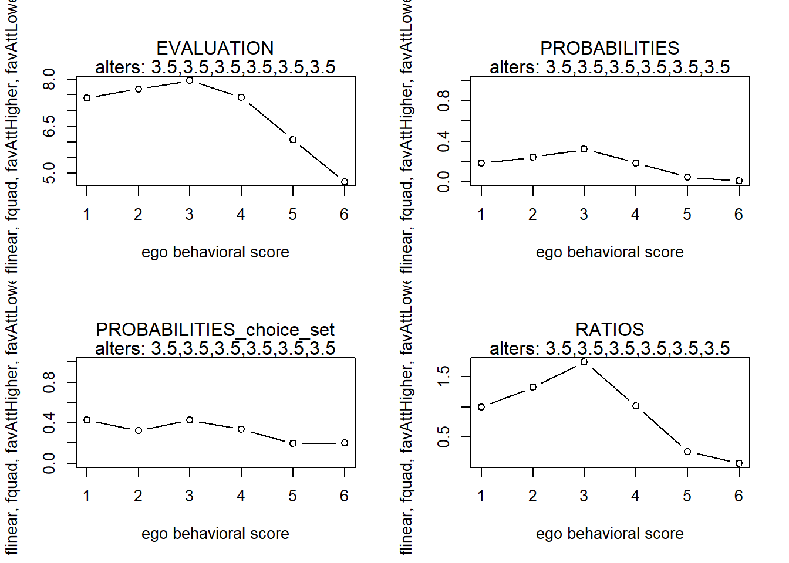
# club2
finluenceplot(alters = alters1, min = 1, max = 6, results = FALSE, fun = list(flinear, fquad, favAttHigher,
favAttLower), params = c(-0.24, 0.0075, 3.3213, 5.0047))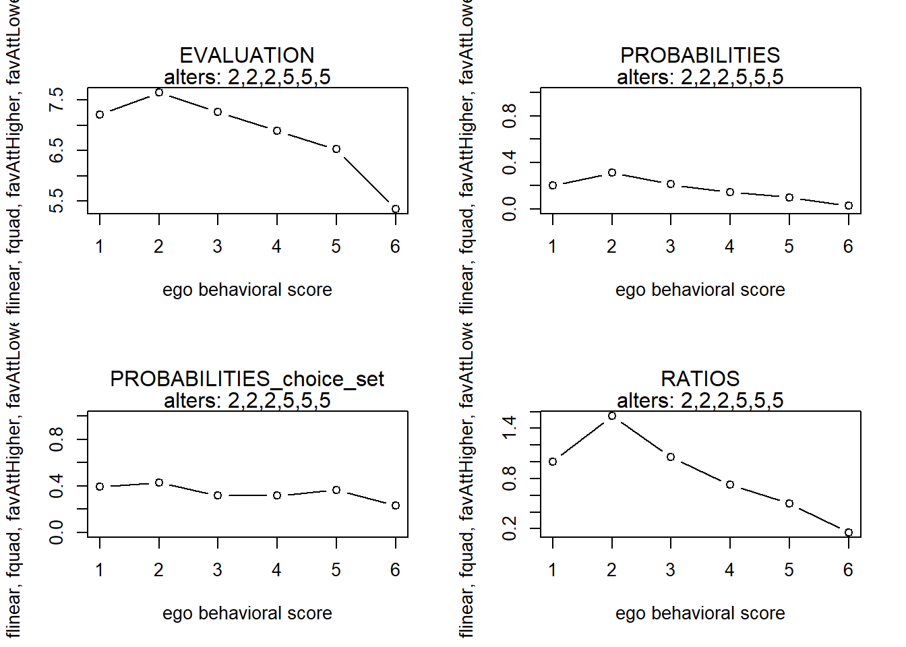
finluenceplot(alters = alters2, min = 1, max = 6, results = FALSE, fun = list(flinear, fquad, favAttHigher,
favAttLower), params = c(-0.24, 0.0075, 3.3213, 5.0047))
# club3
finluenceplot(alters = alters1, min = 1, max = 6, results = FALSE, fun = list(flinear, fquad, favAttHigher,
favAttLower), params = c(-0.2085, 0.021, 3.7703, 2.1283))
finluenceplot(alters = alters2, min = 1, max = 6, results = FALSE, fun = list(flinear, fquad, favAttHigher,
favAttLower), params = c(-0.2085, 0.021, 3.7703, 2.1283))
# club4
finluenceplot(alters = alters1, min = 1, max = 6, results = FALSE, fun = list(flinear, fquad, favAttHigher,
favAttLower), params = c(-1.3313, 0.0192, 2.5493, 4.4952))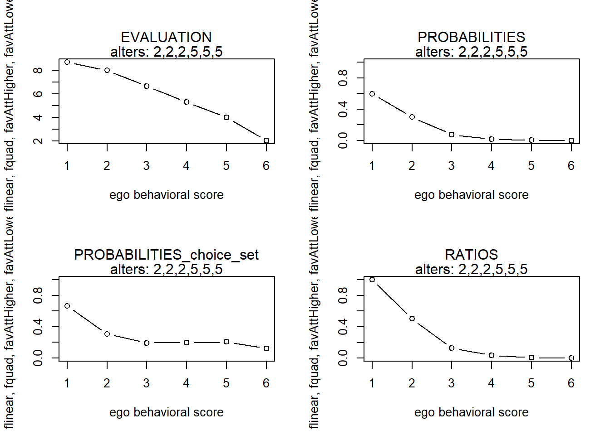
finluenceplot(alters = alters2, min = 1, max = 6, results = FALSE, fun = list(flinear, fquad, favAttHigher,
favAttLower), params = c(-1.3313, 0.0192, 2.5493, 4.4952))
# club5
finluenceplot(alters = alters1, min = 1, max = 6, results = FALSE, fun = list(flinear, fquad, favAttHigher,
favAttLower), params = c(0.1021, 0.0743, 1.1736, 8.5486))
finluenceplot(alters = alters2, min = 1, max = 6, results = FALSE, fun = list(flinear, fquad, favAttHigher,
favAttLower), params = c(0.1021, 0.0743, 1.1736, 8.5486))
Copyright © 2021 Rob Franken